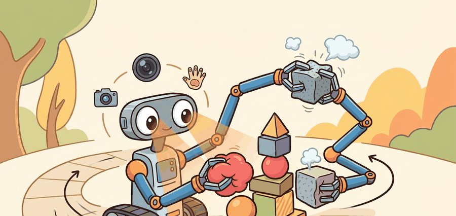

"Fusion is only useful when it changes what the robot decides next."
A Fusion Engineer's Whiteboard

This section synthesizes the tactile sensing pipeline introduced in sections 44.1 through 44.4, so familiarity with tactile sensor models (section 44.1) and slip detection (section 44.3) is assumed. The phase-aware fusion logic developed here reappears in Part X alongside whole-body contact estimation and compliant motion planning. The belief-state formulation connects directly to the uncertainty and state-estimation framework in section 8.6 and the agent belief model in section 2.7.
A robot reaches for a pill bottle half-hidden behind a cup. Vision gets it close enough to touch; then the fingertip sensor catches a millimeter of slip the camera never saw, and the grip tightens in time. Neither modality alone would have worked. Robots are finally leaving controlled bins for cluttered real environments, and that shift makes visuo-tactile fusion the decisive capability gap: vision goes blind the moment a finger occludes the contact zone, and touch alone has no map of where to reach. Here you will build the phase-aware fusion logic that hands authority from camera to fingertip at exactly the right moment, and wire it into a controller that acts on the combined belief.
This section covers early, late, and state-level fusion between vision and tactile sensing, with attention to contact onset, occlusion, uncertainty, and action-conditioned confidence.
It synthesizes the whole chapter by turning multimodal sensing into a real control interface rather than a general claim that more modalities must be better.
Vision and touch should not always vote equally. The right fusion policy changes with distance to contact, occlusion level, slip risk, and what state variable the controller needs right now.
Students often assume that combining vision and touch always produces a better system than either modality alone, because two information sources seem inherently more informative than one. This is wrong in embodied AI: fusing a stale or occluded visual signal with a reliable tactile signal at equal weight actively degrades performance compared with trusting touch alone, as the NeuralFeels results demonstrate. The correct mental model is that fusion quality depends entirely on when each modality is trusted: a well-gated phase-aware fusion outperforms either modality alone, while a naive or poorly timed fusion can underperform the single best modality on the task.
Theory
Vision offers global context and long-range target localization, while touch offers precise local contact evidence after interaction begins. Fusion should therefore be conditioned on phase and uncertainty rather than forced into a static weighted average: this is called the contact-phase handoff problem, and getting it wrong is the most common reason visuo-tactile systems underperform either modality alone.
Why it matters physically: once a finger occludes the contact zone, the camera's signal becomes stale or wrong, yet the motor controller still needs sub-millimeter pose estimates to prevent slip. A robot that keeps trusting a confident-but-occluded visual feature will overcorrect, drop the object, or damage it. Real actuators respond to the fused belief, not to ground truth, so a late or missed handoff propagates directly into grip failure.
How it works: the system maintains a contact-phase variable, estimated from fingertip force threshold or tactile activation. Before contact, observation likelihood weights favor the vision model. At contact onset, the weight shifts toward the tactile likelihood because tactile uncertainty drops sharply while visual uncertainty spikes from self-occlusion. The gating function can be a hard threshold, a learned classifier, or a Bayesian surprise detector; in all cases it outputs the reweighted fused belief that the downstream policy queries.
A useful formulation maintains a latent state with modality-specific observation models. The controller then updates its belief differently before contact, at contact onset, and during sustained manipulation.
$$ b_{t+1}(s) \propto p(o_t^{v}\mid s)\,p(o_t^{t}\mid s)\,\sum_{s'} p(s\mid s', a_t)\,b_t(s'),\qquad \alpha_t = f(\text{contact}, \sigma_v, \sigma_t) $$
Think of the belief state like a navigator's confidence spread on a paper chart. Before any landmarks appear, the navigator shades a wide region of the sea where the ship might be. The moment a lighthouse becomes visible, all the probability collapses toward a narrow patch near that known position. When fog rolls in and obscures the lighthouse, the navigator stops narrowing from visual fixes and instead uses depth soundings (touch, in effect) to keep the shaded region from spreading back out. The controller never knows ground truth; it only ever acts on which part of the chart is shaded, so keeping that shade tight and correctly placed is the whole game.
Concrete systems clarify what fusion actually buys. The NeuralFeels project (Meta FAIR, 2024) tracked object pose during in-hand manipulation by fusing DIGIT tactile images with RGB-D frames: tactile input alone drifted under occlusion, vision alone lost track during contact-rich rolling, but the fused belief cut median pose error roughly in half compared with either modality alone on the YCB object set. In practice that means the difference between a grasp that holds and one that drops: a 14 mm median error under vision-only is enough to miss a precision grip entirely, while the 7 mm fused error lands inside the contact patch. The gain was largest precisely during the phases when one modality was occluded or uninformative, which is exactly the regime a static fusion weight cannot handle.
The system predicts state from vision before contact, shifts weight toward touch as local interaction begins, and exposes a fused belief to the policy or controller. The decisive engineering choice is the gating logic that decides when each modality should dominate.
- Define which state variables are better observed by vision and which by touch.
- Switch or reweight modalities based on contact phase and uncertainty.
- Expose the fused belief, not the raw modalities alone, to the downstream controller where possible.
- Audit failure cases where one modality confidently disagrees with the other.
Worked Example
# Reweight vision and touch after contact onset.
vision_sigma = 0.35
tactile_sigma = 0.12
contact = True
touch_weight = 0.7 if contact else 0.2
vision_weight = 1.0 - touch_weight
fused_uncertainty = round(vision_weight * vision_sigma + touch_weight * tactile_sigma, 3)
print({"vision_weight": vision_weight, "touch_weight": touch_weight, "fused_uncertainty": fused_uncertainty})Expected output: The expected result shifts trust toward touch after contact. That is appropriate when local contact cues become more reliable than vision for the state variable the controller now needs.
Early fusion (concatenate raw DIGIT tactile images with RGB-D frames before encoding) is simplest but forces the backbone to learn cross-modal alignment from scratch; it works on benchtop tasks where both streams are always live and DIGIT publishes at a stable 30 Hz. In the NeuralFeels experiments with a Franka Panda hand, early fusion degraded under partial occlusion because the vision encoder was never trained to distrust its own confident-but-wrong predictions during contact-rich rolling. Late fusion (encode each modality with separate ResNets or ViT patches, then combine at the prediction head) tolerates DIGIT dropouts during high-force contact and makes it easy to ablate whether tactile or RGB-D is carrying a particular episode, which is critical for debugging on real hardware where sensor dropouts have physical causes. Belief-state fusion (maintain an explicit distribution over object pose or contact state and update it with modality-specific likelihoods) is most principled for long-horizon in-hand tasks: when a 14 mm vision-only pose error would cause a grasp to fail, the belief filter can shift weight to touch the moment contact onset is detected, rather than waiting for a learned gate to discover the regime shift from data.
When synchronizing vision and tactile streams in ROS 2, use message_filters.ApproximateTimeSynchronizer with a slop value no larger than half the tactile sensor's publish period. For DIGIT at 30 Hz the period is 33 ms, so set slop=0.015. A slop that is too large silently passes pairs that are tens of milliseconds apart, which makes disagreement episodes look like sensor noise rather than a sync problem. Log the actual timestamp deltas for the first few hundred pairs during bringup so you can confirm the synchronizer is behaving as expected before spending time tuning fusion weights.
ROS 2 message synchronizers, tactile libraries, and multimodal encoders make data transport manageable. The difficult part is still designing the phase-aware trust logic and auditing disagreement cases.
Practical Recipe
- Write down which state variables each modality should dominate before building the fusion model.
- Synchronize timestamps tightly so disagreements are interpretable.
- Use explicit contact-phase gates or learned uncertainty estimates rather than static equal weighting.
- Create disagreement episodes where one modality is wrong and the other is right.
- Evaluate fusion with task metrics and disagreement analysis, not only latent-space latent-space visualizations.
Equal-weight fusion is often lazy engineering. When one modality is uninformative or stale, averaging can be worse than trusting the better source decisively.
In peg insertion, vision places the peg near the hole, while touch takes over for local alignment and slip-free seating once the peg starts interacting with the rim.
Vision and touch are like two strong opinions at a meeting. The trick is not to average them politely, it is to know which one has actually seen the problem from the right distance.
Current work explores learned fusion gates, world models with tactile state, and cross-modal retrieval. The enduring systems question is still whether fusion improves action quality on disagreement-heavy episodes.
When vision and touch disagree in your task, which modality should win, and what evidence supports that choice?
This section is where the chapter's pieces finally connect. The fusion problem is about sensing, control phase, uncertainty, and action consequences all at once, which makes it a compact summary of embodied-system thinking.
A good advanced exercise is to compare early fusion, late fusion, and belief-state fusion on the same task. Students quickly see that the architecture question is inseparable from the control-phase question.
| Tool or Library | Role in the Topic | Builder Advice |
|---|---|---|
| ROS 2 synchronization tools | Timestamp alignment | Use them to keep multimodal episodes temporally coherent. |
| PyTouch | Tactile features | Useful for constructing tactile state estimates that can be fused with vision. |
| Belief-state or sequence models | Phase-aware fusion | Prefer them when uncertainty and contact phase change the best action materially. |
Build a simple fusion gate that changes modality weights at contact onset. Compare it with static equal weighting on a small insertion or slip-detection benchmark.
When fusion fails, inspect timestamp alignment, phase gating, and disagreement handling before changing the neural backbone. Many multimodal failures are systems bugs wearing a representation-learning costume.
Project Ideas
Beginner (weekend): Build a contact-phase fusion gate in PyBullet using a simulated finger with a force sensor: switch modality weights from vision-dominant to touch-dominant when simulated contact force exceeds a threshold, and log fused uncertainty across an episode of pushing a block to a target. The key challenge is choosing a force threshold that fires reliably at contact onset without false positives from near-miss vibrations.
Intermediate (1-2 weeks): Implement late-fusion visuo-tactile pose tracking for a peg-insertion task in MuJoCo or Isaac Lab using LeRobot as the training harness: encode RGB observations with a small ResNet and simulated tactile normal maps with a separate encoder, then train a policy head on the concatenated latents. The key challenge is designing a disagreement-driven evaluation benchmark where one modality is deliberately occluded so you can verify the fused policy outperforms each single-modality baseline on the episodes that matter most.
Section References
Open tactile-learning library relevant for tactile feature extraction and fusion experiments.
Representative optical tactile hardware often fused with vision.
Visuo-tactile object-state inference project illustrating cross-modal fusion for manipulation.
Combining vision and touch works when modality trust shifts with contact phase, uncertainty, and the actual state variable the controller needs.
Design a disagreement benchmark in which vision is misleading but touch is informative, and a second benchmark with the opposite property. Explain how your fusion logic should react in each.